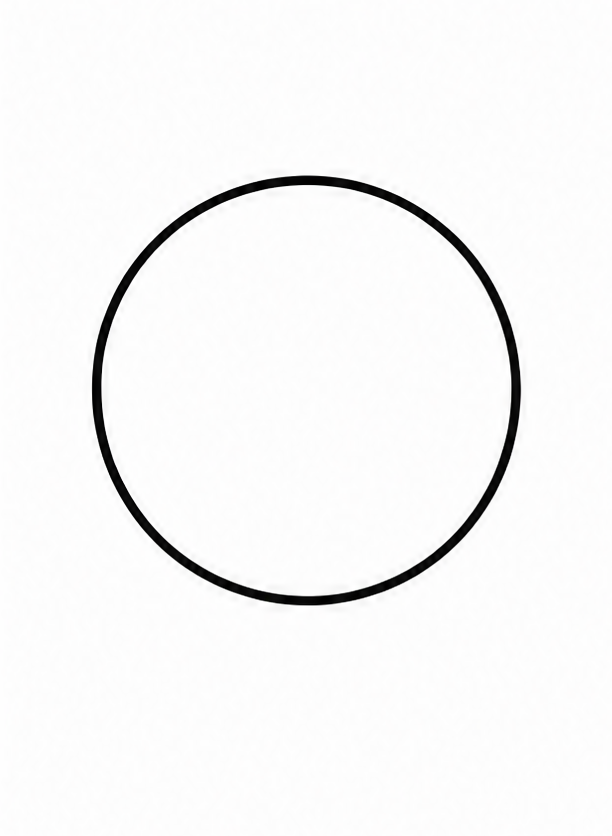
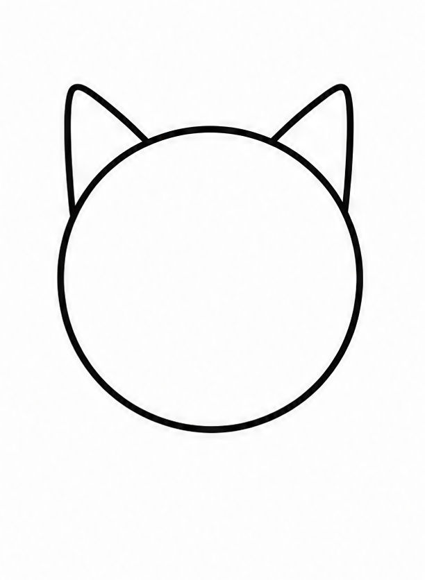
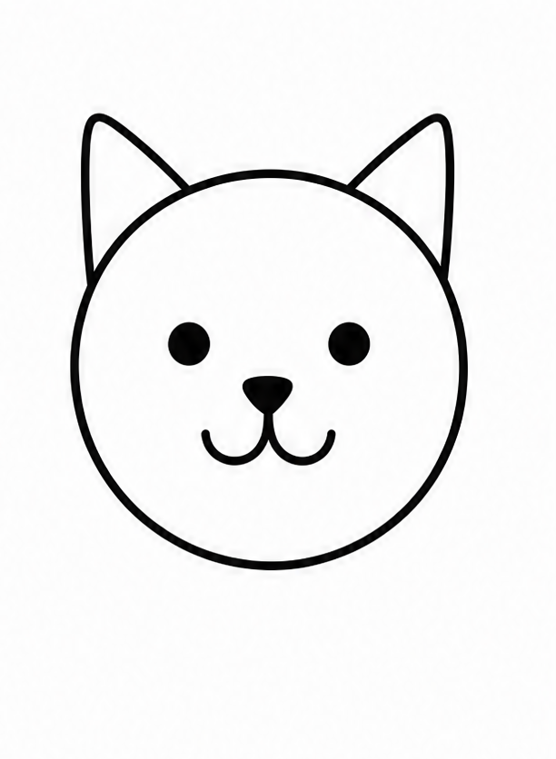
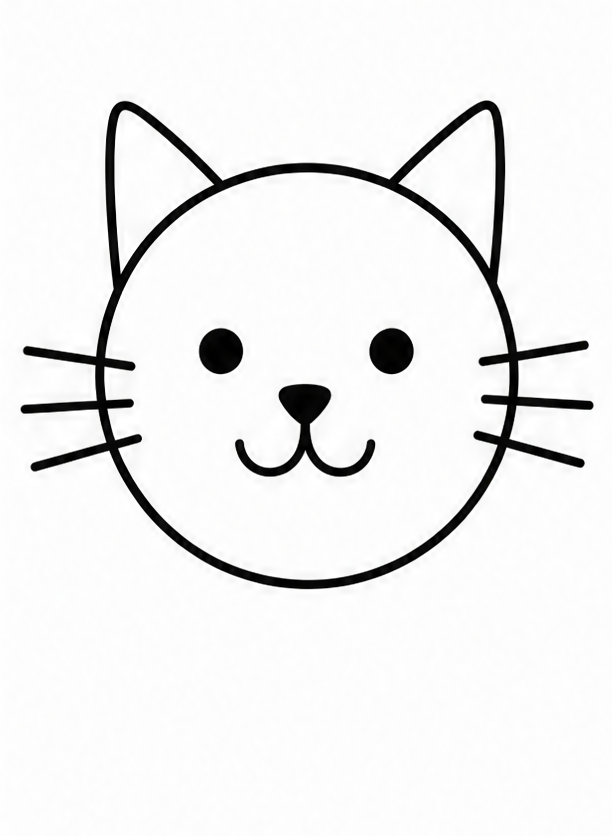
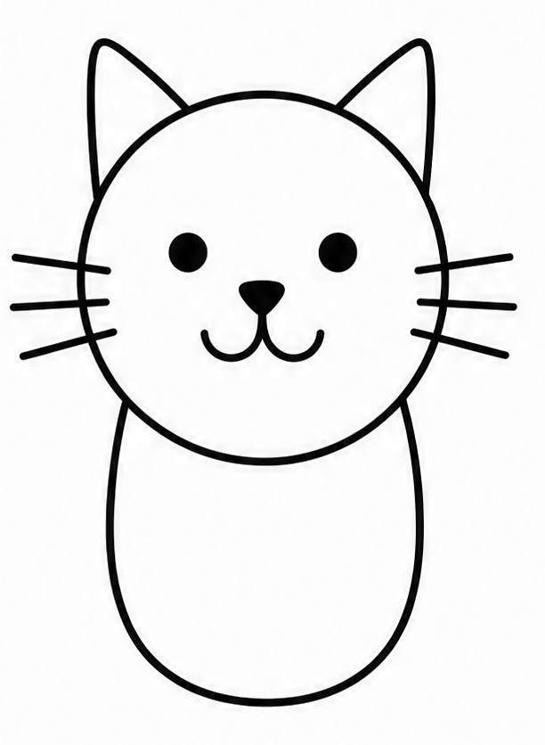
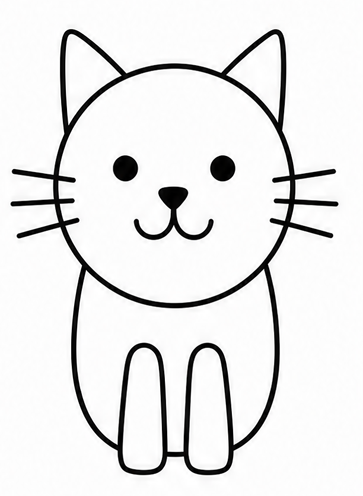
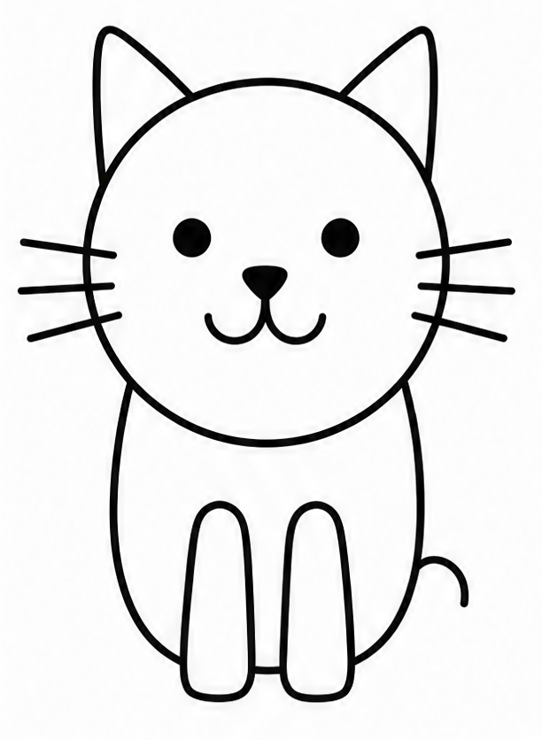
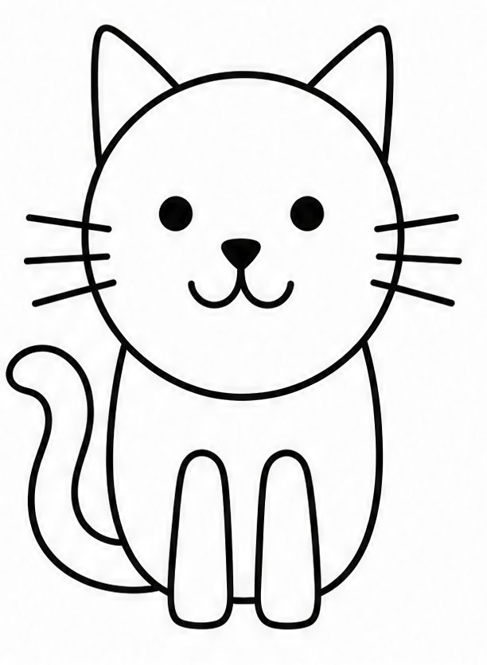
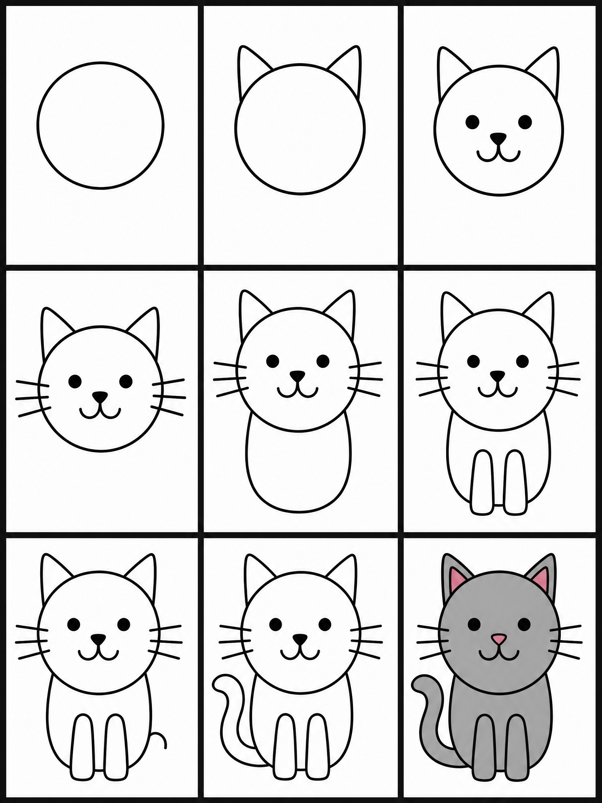

01of nine
画出头部
在纸面上方靠中间的位置，画一个圆润饱满的圆形。下方要留出足够空间，给身体和四条腿。
Marginalia圆要画得够大，否则第三步里的眼睛、鼻子、嘴巴挤不进去。

画一只猫，比想象中更容易。它的整个身体，可以用圆、三角形和几条弧线搭出来。以下这四样，够用了：
| № | Material | Note | Role |
|---|---|---|---|
| 01 | 白纸 | 干净的一张即可，尺寸不限。 | Paper |
| 02 | 勾线笔 | 深色马克笔，用来勾出最终轮廓。 | Outline |
| 03 | 橡皮擦 | 擦掉铅笔起稿的辅助线。 | Erase |
| 04 | 蜡笔 | 最后一步用来上色，让猫毛活起来。 | Color |
在纸面上方靠中间的位置，画一个圆润饱满的圆形。下方要留出足够空间，给身体和四条腿。

在头顶的两侧，各画一个整齐的三角形。左右对称，让它们像两只小屋顶。

在头部圆内，正中间点两个小实心点，就是眼睛。中间偏下画一个小三角形当鼻子，再往下用一条弯弯的 "W" 画出嘴角上扬的小嘴。

从左脸颊向外画三条长而直的胡须；右脸颊镜像画三条。左右各三，共六条。

从头部下边缘的正下方开始，向下画一个开口朝上的大 U 形，作为猫的身体。宽度略宽于头部。

从胸口中间向下，画两个长长的椭圆作为前腿，脚底用小弧线勾出爪子。

在身体右下角，画一个小小的半圆形凸起 —— 这是猫坐下时藏在身下、只露出一角的后爪。

从身体左下方开始，画一条向上高高翘起、又弯又长的曲线。旁边再画一条与它平行的线，尾巴就有了厚度。

拿出蜡笔或马克笔，涂上你喜欢的颜色 —— 橘色的、纯黑的、灰色的猫咪都好看。

